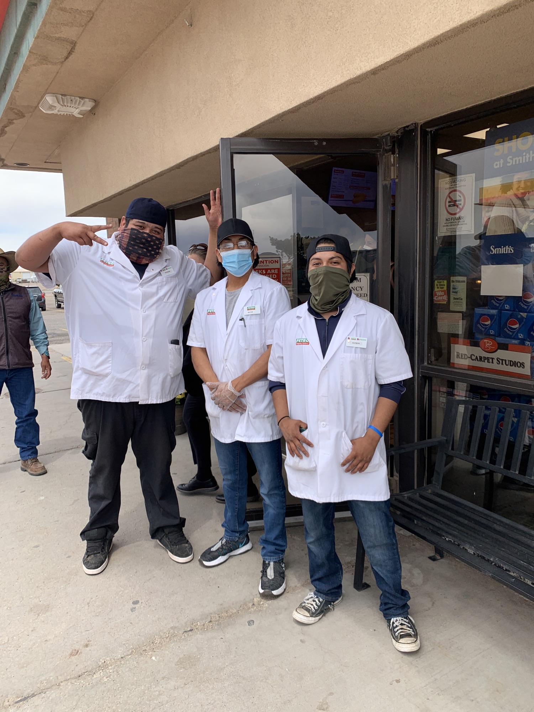

  <div> <div> <div>Motorcade pulled over at 1:51pm at another truck stop, the Petro Stopping Center in Milan, NM, on I-40 just outside of Grants, NM. It has an Iron Skillet Restaurant. It sells “fashion sunglasses,” among other things and has a scale where you can weigh yourself and also get today’s lottery numbers. Nearby is a Wow diner and a place selling East Indian food. </div> <div><br> </div> <div>Dr. Biden joined us and when she exited, people clapped. Three porter workers who said they clean up after truckers and were dressed in white deli smocks came out to take photos on their cell phones. Did they see her walk in? “No, we got radioed!” said one, names Raymond. “We were working on the back,” said another, named Victor. Photo attached. Raymond (left) is from Laguna Pueblo and Victor and Patrick to his right are from Acoma Pueblo. We’ll pass through both on our way back to Albuquerque. </div> <div><br> </div> <div>We left at 2:03pm. </div> <div><br> Color from leaving Navajo Nation:</div> <div><br> </div> <div>Skies have turned overcast and there was some freezing rain as we pulled out of Fort Defiance en route back to Albuquerque. Motorcade navigated some road construction and passed a freight train. A billboard read “DON’T BE THAT PERSON... prevent wildfires,” with a list of things to do. (I believe one of the things listed was to check tire pressure?) A sign for Bluewater Outpost has a hamburger on it and says, “Don’t be HANGRY.” Other signs for Bluewater Outpost in Bluewater Village offer “moccasins for the whole family,” bolos, fireworks, big rig and RV parking, T-shirts and “cool treats” (DQ Blizzards).</div> <div><br> </div> <div><br> </div> <div><br> </div> <div>Motorcade </div> <div><br> </div> <div> <div>Sent from my iPhone</div> <div>Jada Yuan</div> <div>Political Features Writer, <i>The Washington Post</i></div> <div>▊▊▊▊▊▊▊▊▊▊</div> <div>C: ▊▊▊▊▊▊▊▊▊▊</div> <div>Twitter: @jadabird</div> <div>IG: @alphajada</div> </div> </div> </div> 